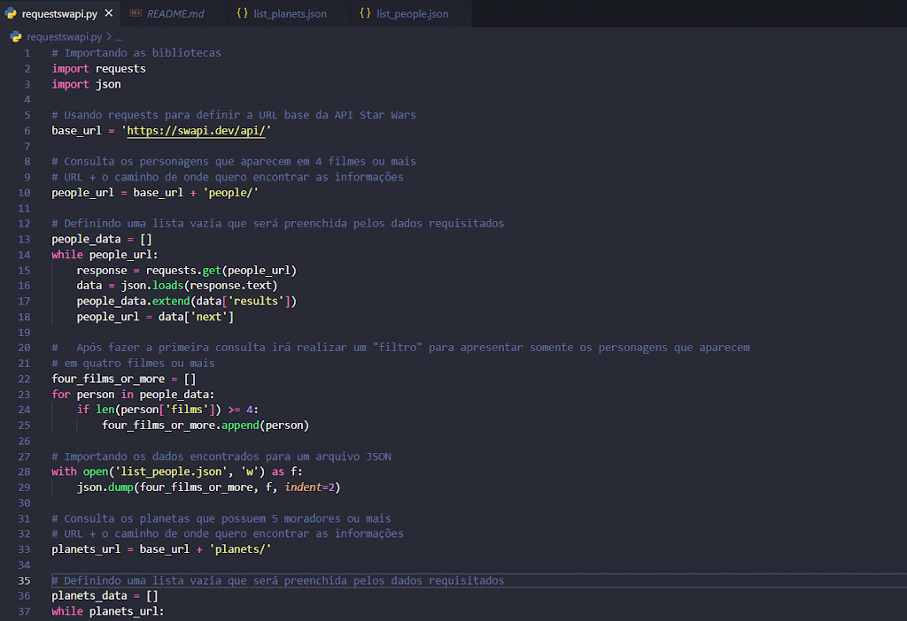

< WebScraping Mercado Livre WebScraping do site mercado livre usando Python, Flask, JS, HTML e CSS NorthWind Query Northwind Query é um WebApp de consulta, adição, listagem, atualização e exclusão de dados em db  Star Wars API Query SWAPI Query é um projeto em back-end para consulta que retorna um json da SWAPI List Users List Users é um WebApp em Python com Flask para adição e listagem de usuários My Pong My Pong é o clássico jogo Pong, com Python e a biblioteca Turtles, podendo ser jogado em dois Resume Landing Page Resume Landing Page é este projeto, no qual apresento um pouco sobre mim. Desenvolvido usando HTML, CSS e JS >